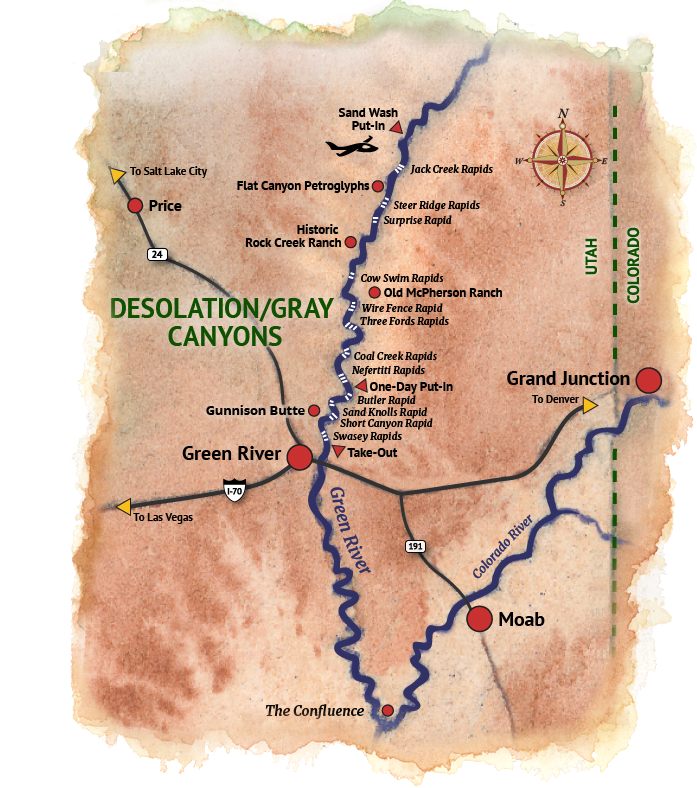
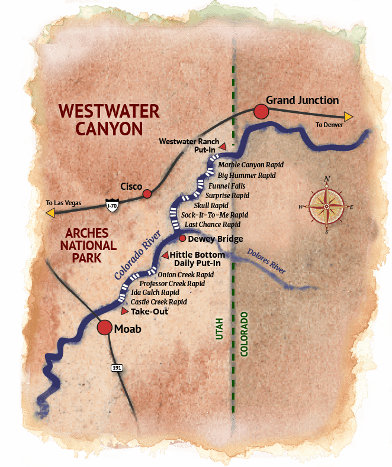

Prepare for an adrenaline-fueled river rafting escapade through rugged canyons, conquering rapids like the thunderous "Raging Torrent" and the challenging "Whitewater Whirlwind," all while immersing yourself in breathtaking scenery and expert guidance.

Join us for an exhilarating river rafting odyssey, navigating through untamed wilderness and mastering rapids such as the formidable "Roaring Cascade" and the exhilarating "White-knuckle Run," while discovering hidden treasures amidst stunning landscapes and expert guidance.Embark on a heart-pounding river rafting adventure through thrilling rapids like the wild "Wildfire Rapids" and the adrenaline-pumping "Rapid Rush," as you journey through rugged canyons, surrounded by awe-inspiring scenery and guided by seasoned experts.
Pricing Information
Raging Torrent (Class IV)*
Roaring Cascade (C III)*
Wildfire Rapids (C V)**
1/2 Day - $225
1/2 Day - $200
1/2 Day - $450
Full Day - $400
Full Day - $300
Full Day - $600
2-Day - $600
2-Day - $500
2-Day - $1200
3-Day - $900
3-Day - $700
3-Day - $2100
The Rapids Classification System
is a framework used in the field of river science and hydrology to categorize the difficulty or challenge level of navigating a river or watercourse, particularly for whitewater rafting, kayaking, and canoeing. It helps outdoor enthusiasts, guides, and adventurers assess the level of skill and experience required to safely navigate a particular stretch of river.
Here's a typical classification system, often denoted by Roman numerals:
Class I: Very easy. Minimal or no obstacles, with small waves and few or no hazards. Suitable for beginners and families.
Class II: Easy. Clear channels with few obstacles, small waves, and easily navigable rapids. Generally suitable for novices with basic paddling skills.
Class III: Intermediate. Rapids with moderate, irregular waves, some obstacles, and narrow passages. Requires good boat control and maneuvering skills. Suitable for paddlers with some experience.
Class IV: Advanced. Intense, powerful rapids with large waves, complex maneuvers, and significant hazards such as rocks and strong currents. Requires precise boat handling and solid whitewater skills. Suitable for experienced paddlers.
Class V: Expert. Extremely challenging rapids with turbulent water, large drops, and numerous hazards. Requires expert-level paddling skills, quick reflexes, and excellent judgment. Only suitable for highly experienced and skilled paddlers.
Class VI: Extreme/Unrunnable. Exceptionally dangerous and potentially life-threatening rapids. These are often characterized by extreme conditions such as waterfalls, undercuts, and sieves. Typically considered too hazardous for paddlers and are rarely attempted.
The classification of a particular river or section of a river can vary depending on factors such as water levels, weather conditions, and individual paddler skill levels. It's essential for paddlers to assess these factors carefully and to always prioritize safety when undertaking whitewater adventures.